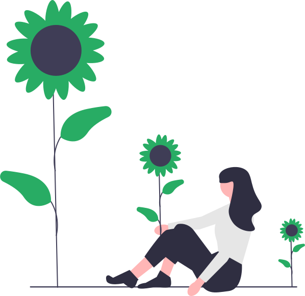
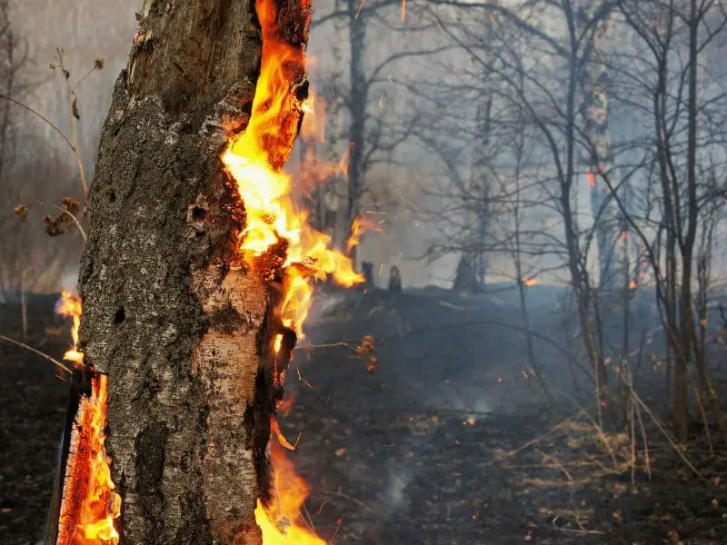

Transformando o mundo
através da empatia

Qual o objetivo?
Concientizar a todos sobre os problemas da natureza causados pelos seres humanos, na ideia de tentar melhorar o mundo para ser um lugar onde possamos viver bem com tudo e todos.
Sustentabilidade
Sustentabilidade é a capacidade de suprir as necessidades do presente sem comprometer as gerações futuras. É um conceito fundamental para a preservação do meio ambiente e a garantia de um futuro saudável para todos.Disperdício
O desperdício de alimentos é um problema global, causado pelo excesso de produção e demanda por alimentos perfeitos. Isso tem impactos ambientais, financeiros e aumenta a fome no mundo. Produtores, varejistas e consumidores precisam trabalhar juntos para produzir e consumir alimentos de forma mais sustentável e reduzir o desperdício.Voluntariado
As ações voluntárias têm um impacto positivo no bem-estar social e ambiental, desenvolvendo habilidades e conhecimentos nos voluntários. Elas ajudam a melhorar a qualidade de vida, promovem a igualdade social e conscientizam sobre a preservação ambiental. Qualquer pessoa pode se tornar um voluntário.

Crescente desmatamento
Crescente desmatamento
no Brasil
Desmatamento na Amazônia brasileira cresce com exploração madeireira, expansão agrícola e pecuária. Apesar da redução desde 2004, mais de 7 mil km² de floresta foram perdidos em 2019. Impactos no clima, biodiversidade e comunidades locais. Governo luta contra desmatamento ilegal, mas enfrenta desafios econômicos e de fiscalização.
17%
Estima-se que aproximadamente 17% da Amazônia tenha sido desmatada desde a década de 1970.
1,5 Milhão
Mais de 474,8 milhões de árvores foram desmatadas no Brasil este ano, correspondendo a mais de 792 mil hectares.